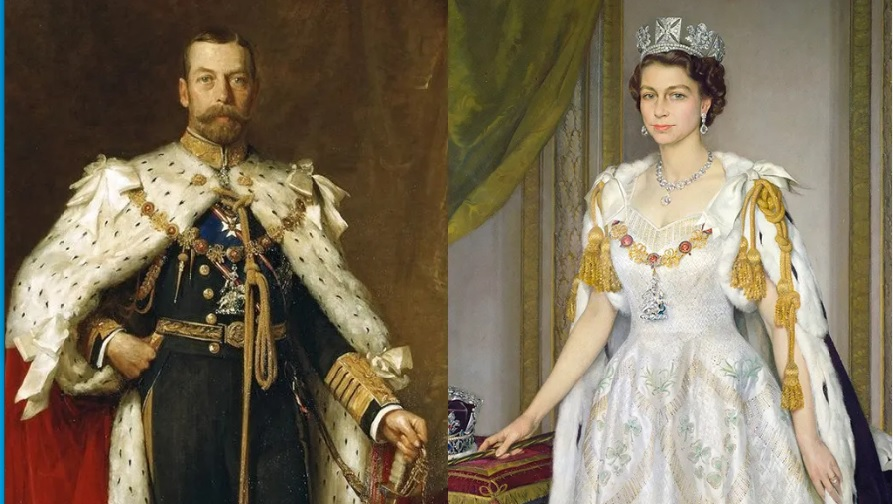
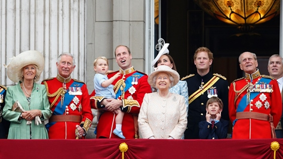
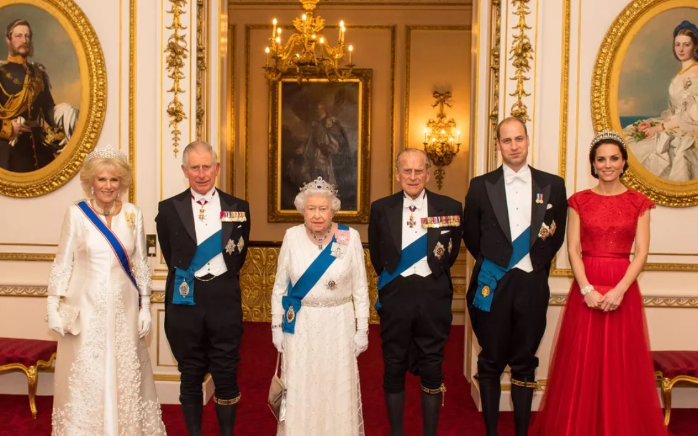
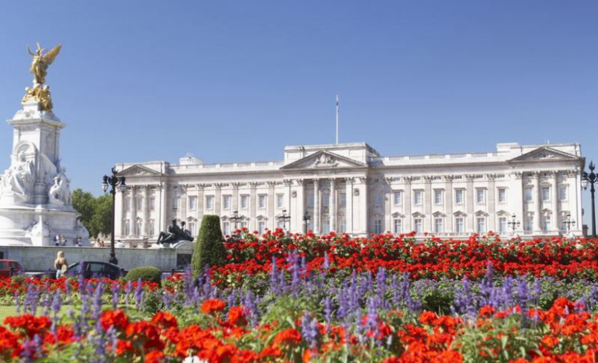

A Família Real Britânica, atualmente vinculada à dinastia Windsor, tem desempenhado um papel fundamental na história do Reino Unido. A dinastia Windsor foi estabelecida em 1917, substituindo a dinastia Saxe-Coburgo-Gota, e desde então, cinco monarcas da Casa de Windsor ocuparam o trono britânico.
Ao longo dos séculos, a realeza britânica passou por eventos significativos e transformações culturais que moldaram a identidade nacional. Desde a Idade Média até os tempos modernos, a monarquia tem sido uma peça central na história do país.
Os membros da família real são conhecidos por suas obrigações oficiais e cerimoniais, além de manterem uma forte presença na mídia. Eles frequentemente participam de eventos públicos, apoiando várias causas e organizações de caridade. Casamentos reais, coroações e outros eventos importantes são acompanhados por milhões de pessoas ao redor do mundo.
O Palácio de Buckingham, residência oficial da família real, é um dos principais pontos turísticos de Londres. Visitantes podem assistir à troca da guarda e explorar algumas das magníficas salas abertas ao público durante o verão.
